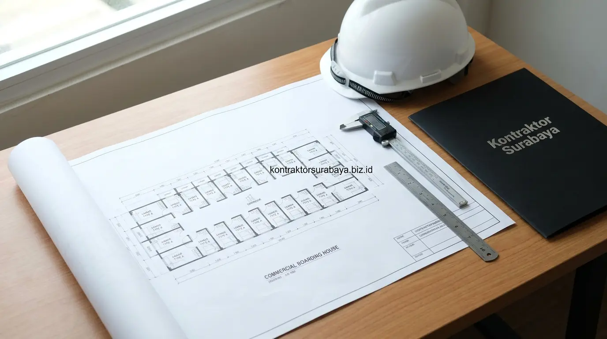

Membangun rumah kos di sekitar area kampus ternama Surabaya seperti ITS, UNAIR, UPN Veteran, hingga UNESA merupakan langkah investasi properti yang sangat menjanjikan. Namun, di tengah ketatnya kompetisi hunian sewa, kos-kosan konvensional yang sempit, minim cahaya, dan bersirkulasi pengap kian ditinggalkan. Generasi mahasiswa saat ini menuntut standar hunian yang setara dengan apartemen studio mini, yaitu kos eksklusif dengan privasi tinggi, fasilitas modern, dan lingkungan yang kondusif untuk belajar.
Keberhasilan investasi kos eksklusif 2 lantai tidak hanya ditentukan oleh lokasi strategis, melainkan sangat bertumpu pada kematangan rancangan arsitektur. Melalui perencanaan denah bersama tim jasa arsitek Surabaya profesional, Anda dapat memaksimalkan jumlah unit sewa tanpa mengorbankan kenyamanan, sirkulasi udara, maupun aspek keselamatan penghuni.
1. Kenapa Tata Ruang Fungsional Memengaruhi Kecepatan Balik Modal Kos-Kosan?
Denah yang efisien memungkinkan jumlah kamar lebih optimal pada luas lahan yang sama, sehingga potensi pendapatan sewa per meter persegi lahan menjadi lebih tinggi dibanding denah yang boros ruang sirkulasi. Ketika seorang investor membeli lahan seluas 200 m², perbedaan perencanaan tata ruang bisa menghasilkan selisih 2 hingga 4 kamar sewa. Jika tarif kos eksklusif berada di kisaran Rp 2.000.000 hingga Rp 2.500.000 per bulan, penambahan 3 kamar saja setara dengan potensi pendapatan kotor tambahan Rp 72.000.000 hingga Rp 90.000.000 per tahun.
Semakin banyak kamar yang dapat dibangun secara proporsional tanpa mengorbankan kenyamanan penghuni, semakin besar pula potensi pendapatan sewa bulanan yang dapat diperoleh dari lahan yang sama, sehingga perencanaan tata ruang sejak tahap desain menjadi faktor yang berkaitan langsung dengan kecepatan balik modal (Break Even Point / BEP) investasi kos Anda.

2. Denah Efisien untuk Memaksimalkan Jumlah Kamar pada Lahan Terbatas
Koridor tengah dengan kamar di kedua sisi, ukuran kamar standar yang seragam, kamar mandi dalam yang kompak, dan tangga yang hemat ruang adalah empat elemen denah yang membantu memaksimalkan jumlah kamar pada lahan terbatas:
- Koridor Tengah dengan Kamar di Kedua Sisi: Memaksimalkan efisiensi sirkulasi dibanding koridor satu sisi yang membutuhkan lebih banyak ruang terbuka tanpa menambah kapasitas unit sewa.
- Ukuran Kamar Standar yang Seragam: Dimensi modular seperti 3 x 3,5 meter atau 3 x 4 meter memudahkan proses konstruksi fisik, meminimalisir sisa potongan material, dan mempermudah pengadaan interior custom secara massal.
- Kamar Mandi Dalam yang Kompak: Ukuran kamar mandi dalam 1,5 x 1,5 meter sudah sangat fungsional untuk kloset duduk, shower mandi, dan wastafel gantung tanpa memangkas terlalu banyak luas kamar tidur utama.
- Tangga yang Hemat Ruang: Menggunakan model tangga bordes bentuk U atau tangga lurus bersudut ergonomis di dekat akses masuk utama, sehingga kolong tangga dapat dialihfungsikan sebagai gudang penyimpanan atau area panel meteran listrik PLN.
| Parameter Desain | Denah Koridor Satu Sisi (Single Loaded) | Denah Koridor Tengah Dua Sisi (Double Loaded) |
|---|---|---|
| Efisiensi Lahan | Boros lahan sirkulasi (hanya 50–60% lahan jadi kamar) | ✅ Sangat efisien (70–80% lahan efektif jadi kamar) |
| Kapasitas Kamar | Lebih sedikit (misal 10–12 kamar pada lahan 200 m²) | ✅ Maksimal (bisa mencapai 14–18 kamar pada lahan sama) |
| Pencahayaan & Void | Mudah mendapatkan bukaan luar secara langsung | ✅ Memerlukan void tengah (skylight) atau inner court |
| Kecepatan Balik Modal | Lebih lambat karena pendapatan sewa per m² lebih rendah | ✅ Cepat tercapai berkat optimalisasi jumlah unit sewa |
| Privasi Pintu Kamar | Menghadap langsung ke halaman luar / pagar | ✅ Terlindungi di dalam gedung, pintu diselingi stagger |
Untuk menghitung kelayakan struktur bentang kolom dan efisiensi anggaran secara terperinci, pelajari panduan penyusunan RAB & estimasi biaya kos agar investasi Anda terukur sejak sebelum peletakan batu pertama.
3. Fasilitas yang Meningkatkan Daya Tarik Kos Eksklusif bagi Mahasiswa
Wifi yang merata di setiap lantai, akses keamanan digital, area laundry dan jemur bersama, serta ruang belajar atau komunal adalah empat fasilitas yang meningkatkan daya tarik kos eksklusif bagi mahasiswa:
- Wifi yang Merata di Setiap Lantai: Menjadi kebutuhan mutlak mahasiswa untuk kegiatan belajar, streaming materi kuliah daring, dan pengerjaan tugas akhir. Penempatan router atau access point terdistribusi di lorong koridor menjamin sinyal stabil hingga ke sudut kamar.
- Akses Keamanan Digital: Pemasangan smart door lock dengan kartu RFID atau kode PIN pada pintu utama gedung dan masing-masing kamar memberi rasa aman ekstra bagi penghuni maupun orang tua mahasiswa di luar kota.
- Area Laundry dan Jemur Bersama yang Tertata: Penempatan mesin cuci koin otomatis di area servis atap (rooftop) atau belakang lantai 2 dengan atap transparan menjaga kerapian gedung tanpa pemandangan jemuran pakaian yang berantakan di depan kamar.
- Ruang Belajar atau Komunal: Area santai bersama dengan meja panjang, colokan listrik yang melimpah, dan kursi ergonomis memberi alternatif suasana belajar kelompok tanpa harus menghabiskan uang di cafe luar setiap malam.
4. Ventilasi dan Pencahayaan yang Perlu Diperhatikan pada Kos 2 Lantai
Jendela pada dua sisi kamar untuk ventilasi silang, dipadukan bukaan cahaya yang cukup, membantu kamar kos tetap nyaman tanpa terasa pengap meski berukuran kompak. Iklim tropis Surabaya yang bersuhu hangat dan lembap menuntut perputaran udara yang konstan agar penghuni tidak terus-menerus bergantung pada pendingin ruangan (AC).
Kamar kos yang hanya mengandalkan satu sumber cahaya dan udara cenderung lebih cepat terasa lembap, terutama pada kamar yang berada di tengah bangunan tanpa akses langsung ke area terbuka. Oleh karena itu, arsitek profesional merancang void terbuka (inner courtyard) di bagian tengah denah atau memasang jalusi kisi-kisi di atas kusen pintu kamar (bovenlicht) agar terjadi pertukaran hawa panas ke arah atap.
5. Bagaimana Sirkulasi Koridor Memengaruhi Kenyamanan dan Privasi Penghuni?
Lebar koridor yang cukup dan penempatan pintu kamar yang tidak saling berhadapan langsung membantu menjaga privasi penghuni sekaligus kenyamanan sirkulasi antar kamar. Standar lebar koridor bersih yang ideal untuk kos 2 lantai adalah 1,2 hingga 1,5 meter agar dua orang dapat berpapasan dengan leluasa saat membawa barang bawaan atau koper kuliah.
Selain ukuran fisik, penempatan pintu kamar sebaiknya dirancang zigzag (staggered layout) atau berselang-seling. Denah pintu yang tidak saling berhadapan persis membuat aktivitas di dalam kamar tidak langsung terlihat oleh tetangga depan saat pintu dibuka, menciptakan rasa aman psikologis yang sangat dihargai oleh penyewa kos eksklusif. Lihat beragam contoh perancangan arsitektur komersial kami di halaman galeri proyek.
6. Elemen Keamanan yang Wajib Ada pada Bangunan Kos Eksklusif
CCTV pada area umum, pintu gerbang dengan akses terkontrol, penerangan koridor yang memadai, dan akses kartu atau kode pada setiap kamar adalah empat elemen keamanan yang wajib ada pada bangunan kos eksklusif:
- CCTV pada Area Publik 24 Jam: Pemasangan kamera pengawas di area parkir motor, lobi masuk, koridor lantai 1, dan koridor lantai 2 memberikan bukti pemantauan visual yang andal.
- Pintu Gerbang dengan Akses Terkontrol: Gerbang otomatis atau pintu magnetik autolock mencegah pihak asing dan pengamen masuk secara bebas ke area hunian.
- Penerangan Koridor Otomatis: Lampu LED bersensor cahaya (photocell) atau sensor gerak (motion sensor) memastikan koridor dan tangga tetap terang benderang sepanjang malam tanpa pemborosan energi listrik.
- Akses Kunci Digital Kamar Individual: Mengganti anak kunci fisik konvensional dengan smart handle digital mengurangi risiko kunci duplikat liar saat terjadi pergantian penyewa kamar.
7. Kesalahan Desain yang Membuat Kos-Kosan Sulit Menarik Penghuni
Berdasarkan evaluasi lapangan, beberapa kesalahan perancangan arsitektur yang sering membuat bangunan kos baru sepi peminat antara lain:
- Ventilasi Kamar yang Minim dan Gelap: Mengabaikan bukaan jendela luar membuat kamar terasa lembap, berbau apek, dan berisiko dinding berjamur saat calon penyewa melakukan survei langsung.
- Koridor Terlalu Sempit: Memaksakan koridor selebar 90 cm demi mengejar luas kamar menimbulkan kesan sesak dan sempit seperti asrama kuno, merusak citra kos eksklusif.
- Kurangnya Fasilitas Parkir dan Komunal: Lupa memperhitungkan kapasitas parkir sepeda motor yang memadai (minimal rasio 1:1 per kamar) sehingga motor penghuni meluber ke bahu jalan umum.
- Sistem Keamanan Ala Kadarnya: Tidak adanya gerbang pengaman atau penjagaan membuat orang tua mahasiswa ragu menandatangani sewa tahunan.
"Arsitektur kos eksklusif bukan semata-mata membagi lahan menjadi petak-petak kamar tidur, melainkan strategi bisnis ruang untuk menciptakan ekosistem hunian yang aman, produktif, dan bernilai sewa tinggi bagi generasi mahasiswa masa kini." — Erlang Sinatrya, Lead Project Engineer Kontraktor Surabaya
Setiap lahan memiliki orientasi matahari, kontur tanah, dan lebar jalan akses yang berbeda. Denah optimal untuk kos eksklusif 2 lantai perlu disesuaikan melalui survei lapangan dan konsultasi komprehensif bersama arsitek. Pelajari cakupan layanan perancangan denah dan gambar kerja lengkap pada halaman jasa arsitek Surabaya, serta temukan ragam solusi konstruksi terpadu pada direktori layanan konstruksi kami.